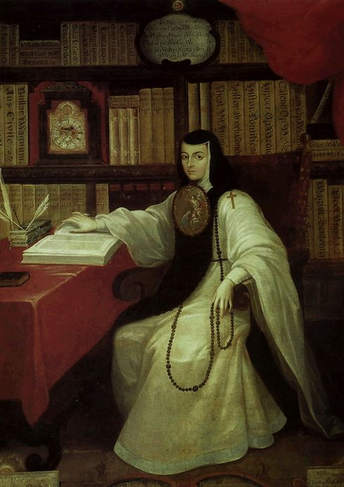

Bertha Parker Pallan was born in Chautauqua County, New York in 1907. Her mother was an actress and her father was the first president of the Society for American Archaeology. As a child, she would assist her father with excavations. But, once her mother and father divorced, Bertha moved west to L.A. with her mom. Bertha and her mom performed with Ringling Brothers and Barnum & Bailey Circus as Pocahontas. Once Bertha got older, she moved to Nevada to work on an archaeological site for the Southwest Museum. Mark Raymond Harrington, a well-known archaeologist, hired Bertha as a camp cook and excavation secretary.
In 1929, she discovered and excavated the pueblo site of Scorpion Hill, and her finds were exhibited in the Southwest Museum. Because of her smaller hands, she was able to access some of the harder to reach crevices and discovered both ancient tools and a skull that belonged to an extinct species of ground sloth. Bertha worked at Gypsum Cave in 1930, a six room cave that Mark Harrington showed had the earliest evidence for human occupation of North America during the Pleistocene era. She left Southwest University in 1940 to pursue a career in television, and worked as an advisor on shows depicting Native Americans, essentially how indigenous people and their stories and cultures were depicted in the media.
(1651-1695)
"The Phoenix of Mexico"

In seventeenth century Mexico, Juana Ines was born into poverty and rose to be a hero of her time. Starting from when she was little, she wanted to learn new things. She would sneak into her sister’s lessons and begged her mother to send her to University dressed in men’s clothes. After being told girls couldn’t learn, she began to teach herself. She wanted time to teach herself new things and have the freedom to learn, so she became a nun. She continued to read tirelessly and grew a huge library, the largest in the New World. She pushed herself to continue writing plays and poetry, and advocate for women’s rights. Juana taught drama to the girls at a school and wrote her own plays. She is credited for her Respuesta a Sor Filotea, which defended women’s rights to education and is also credited for becoming the first published feminist of the New World. As word began to spread of Juana’s abilities, some doubted her and the Viceroy decided to put her to the test. He gathered 40 brilliant scholars and she blew all of them away. The Marquis visited her, and had her works published in Spain. Her plays, poetry, and writing for festivals contributed to world outside of Mexico.
(1899-1968)
The Queen of Human Rights
Queen Soraya ruled Afghanistan from 1919-1929. But, she wasn’t like most queens. She fought for girls education, took off her veil in public, and participated in hunting parties on horseback.
After ridding Afghanistan of British rule, she would enstate new laws with her husband that included forbidding child marriage, making burqas optional, abolishing slavery and torture, and making all religions welcome. Soraya and her husband became an unstoppable team as they set out to modernize Afghanistan. She also became the minister of education with a mandate to educate girls and sent many to Universities abroad. As an advocate for women, she founded progressive magazines, encouraged women to enter politics, and started an all-female secret service to monitor abusive men in relationships. She caused a lot of controversy through the fact that she would go out with her husband in public to things like cabinet meetings, visits to military conflict zones, and parades. This was extremely frowned upon at the time, but Soraya had been brought up more progressively and became the first in many different aspects for a slowly modernizing culture. In 1927 and 1928 she and her husband visited Europe, and were met with open arms. The king and queen received honorary degrees from Oxford University and the queen was able to speak to a large group of teachers and leaders.
(1920-1951)
An Immortal Legacy in Science
Henrietta Lacks was born in 1920 in Roanoke, Virginia. In January 1951, she went to the hospital with abdominal pain and bleeding. She was diagnosed with cervical cancer, and during radiation treatments, doctors removed two cervical samples from her without her knowledge or permission. She died at the age of 31 in late 1951. The cells from Henrietta went to the labs of Dr. Otto Gey, who noticed that Henrietta’s cell weren’t like other cells. They were a lot more durable than other cells, and often survived a lot longer. So, Otto Gey decided to multiply on of her cells, forming what he called the HeLa line. This strain of cells continued to impact science for years. Jonas Salk used the HeLa line to develop a polio vaccine and after that as interests grew, scientists decided to continue cloning the line. Her cells became an important tool in science, used for vaccines, gene mapping, and in vitro fertilization.
(1982-)
A Somali-American and proud, state legislator
Born in Somalia, Ilhan and her family fled the civil war when she was 8 years old. Her family spent four years at a refugee camp in Kenya, before coming to the United States in the 1990s. She learned english quickly, and would begin to accompany her grandfather to caucus meetings and political events to serve as his translator at the age of 14. Between 2012 and 2013, she worked with the Minnesota Department of Education as a Child Nutrition Outreach Coordinator. In 2016, she was elected as a member of the Minnesota House of representatives, making her the first Somali-American legislator elected to office in the United States. Ironically, she won the same election where the elected president belittled women, muslims, and immigrants. Ilhan became the director of the Minneapolis group Women Organizing Women which seeks to empower all women, specifically first and second generation immigrants, to enter roles of leadership in communities.
(1875-1955)
An Activist and Educator for All
Born to former slaves on July 10, 1875, Mary Mcleod Bethune became one of the most important African-American educators, women’s and civil rights advocates, and presidential advisors to set the tone for today’s leaders. The college she founded set standards for today’s HBCUs (historically black colleges and universities) and the role she played as an advisor to Franklin D. Roosevelt gave her a voice to advocate for civil rights. She benefitted from efforts to educate African-Americans after the war, and graduated from a boarding school in North Carolina in 1894. Mary wanted to become a missionary, but since no church was willing to sponsor her, she decide to become an educator. After her marriage ended, she needed a job to support her son, and decided to found and open the Daytona Beach Literary and Industrial School. This was at first an all-girls boarding school school set up to improve education for women of color, but eventually became a college that merged with the all-male Cookman institute to form the Bethune-Cookman College. She believed that education was the key to racial advancement, and lived by this. As an advocate for women’s and civil rights, she founded many organizations and led voter registration drives after women gained the right to vote. As a close friend of Eleanor Roosevelt, she became the advisor to the president on minority affairs in 1935. She was also a leader of FDR’s unofficial “black cabinet.” In 1936, she became the director of the Division of Negro Affairs of the National Youth Administration where she would help young people find job opportunities. She became a trusted friend and adviser to both the president and Eleanor Roosevelt.